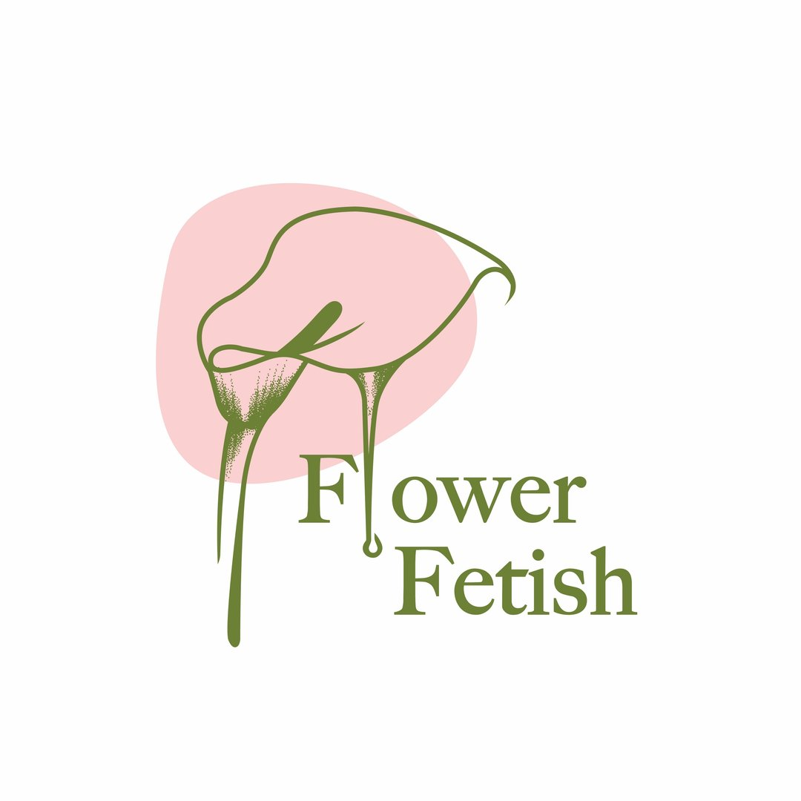

Твой WhatsApp в Telegram
Рит, привет! Я подготовил эту презентацию, чтобы показать тебе стратегию перехода на комфортную автоматизацию FlowerFetish. Мы убираем зависимость от AmoCRM и переносим всё общение в твой привычный Telegram. Ниже — пошаговый план, расчеты твоей выгоды и условия запуска.
Шаг за шагом к результату
Шаг 1: Прямой мост (3-5 дней)
Регистрируем твой номер в официальном WhatsApp и связываем его с Telegram. Оп: ты отвечаешь клиентам без CRM. (Срок с запасом на проверку бизнеса со стороны Meta)
Шаг 2: Умное сохранение (5-7 дней)
Активируем невидимого помощника. Каждый новый диалог в WhatsApp автоматически создает карточку в твоей AmoCRM. История не теряется, рутины нет.
Шаг 3: Уведомления (7-14 дней)
Подключаем авто-статусы. "Заказ №123 принят", "Букет собран — вот фото", "Курьер выехал". Клиенты спокойны, а ты не копируешь им статусы руками.
Шаг 4: Повторные продажи (В фоне)
Система начинает заранее напоминать о днях рождения, годовщинах и важных датах постоянных клиентов, чтобы ты могла вовремя предложить им идеальный букет.
Прозрачная выгода
Мы убираем Wazzup и подключаемся напрямую. Посмотри, как это меняет бюджет за год.
| Параметр | Wazzup | Напрямую через API |
|---|---|---|
| Абонентская плата | ~36 000 ₸ / мес | 0 ₸ / мес |
| Лимиты диалогов | Оплата за рост | Безлимит* |
| Сложность работы | Интерфейс CRM | Telegram |
Твой профит (2026):
С учетом новых правил Meta (бесплатное Service Window) и отказа от Wazzup, ты
экономишь более 250 000 ₸ в год. Твои вложения в настройку окупаются всего за 2 месяца.
Безлимит на ответы
Meta убрала лимит в 1000 чатов. Отвечай хоть 10 000 клиентам — это всегда бесплатно.
Золотые 24 часа
Любое общение в течение суток после сообщения клиента — для тебя 0 ₸.
Прозрачный маркетинг
Платным остается только "холодный" маркетинг (рассылка акций по твоей базе).
Честные условия для своих
Рит, я не хочу наглеть в плане цены. Для меня сейчас гораздо важнее собрать крутое портфолио и просто сделать для тебя классный, работающий продукт. Поэтому это специальные условия «для своих».
За регистрацию в Meta, настройку n8n и моста TG. Ты навсегда избавляешься от налога на Wazzup.
Твоя страховка: бэкапы базы, мой контроль 24/7 и любые мелкие правки по запросу.
Пока система работает на моем сервере бесплатно. В будущем, если база и нагрузка сильно вырастут, мы обсудим переезд на отдельный более мощный сервер.